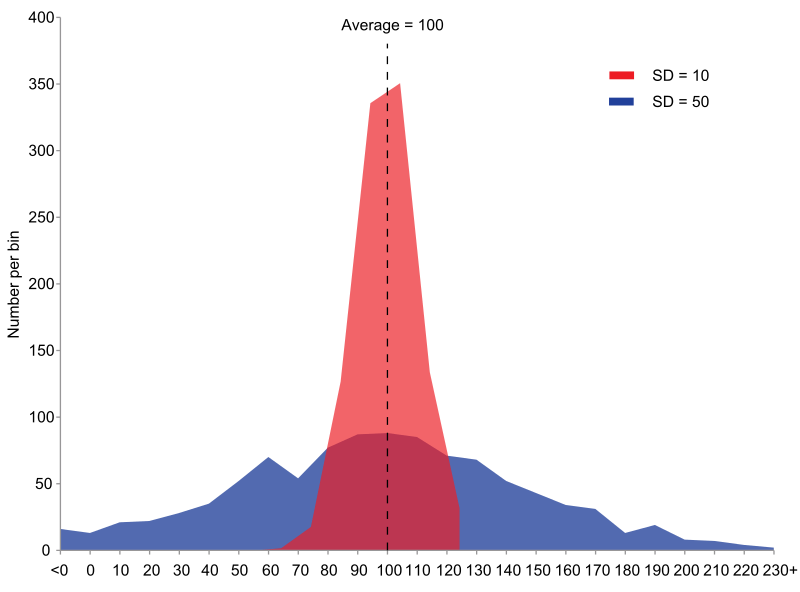
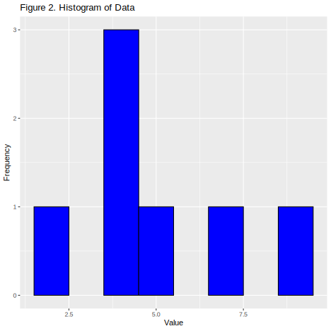
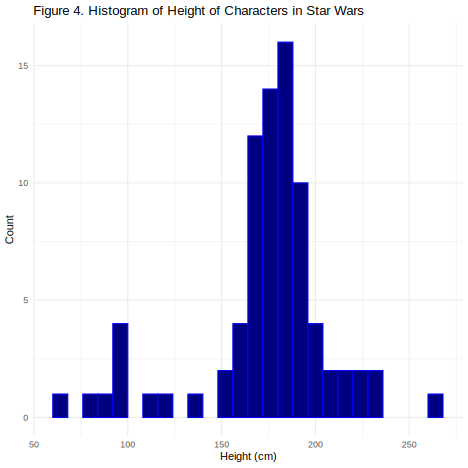
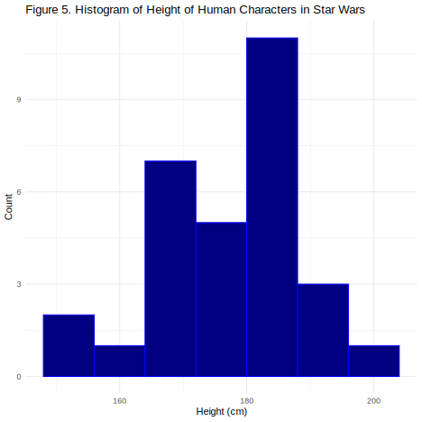

The Importance of Summary Statistics and Techniques for Creating Them in R
Jelin George (Matriculation Number: 400826617)
International Management, M.A., Hochschule Fresenius - University of Applied Science
Author Note
The authors have no conflicts of interest to disclose.
Correspondence concerning this article should be addressed to Jelin George (Matriculation Number: 400826617), International Management, M.A., Hochschule Fresenius - University of Applied Science, Email: george.jelin@stud-hs.fresenius.de
Abstract
This document presents a concise overview of summary statistics and their importance in R. Summary statistics - such as mean, median, standard deviation, and frequency counts - capture the key features of a dataset, enabling quick exploration and interpretation. R provides powerful functions and visualization tools to efficiently compute and present these statistics, making them essential for simplifying data, identifying patterns, and supporting informed analysis and decision-making. Practical examples and code are provided to demonstrate these concepts in action. The document also discusses the limitations of summary statistics and its application.
Keywords: summary statistics, R programming, data analysis, descriptive statistics, data visualization, exploratory data analysis, limitations
The Importance of Summary Statistics and Techniques for Creating Them in R
Summary statistics are numerical values that describe the main features of a dataset, such as its center and spread. They simplify complex data into easily interpretable numbers, offering quick insights into trends and variability, and serve as a foundation for further analysis. These statistics provide a snapshot of the data, facilitating initial exploration, quality checks, and communication of results. In R, these statistics not only reveal patterns and outliers but also lay the groundwork for informed decision-making.
In this document, we will:
Define summary statistics and their importance
Explore key measures and techniques
Demonstrate practical application with code
Analyze limitations and consider furture directions
What is Summary Statistics?
Summary statistics are concise numerical measures that capture the essential characteristics of a dataset. They serve as foundational tools in data analysis, providing concise descriptions of large datasets. They help analysts and researchers understand the central tendencies, variability, and overall distribution of data, making complex datasets interpretable and actionable. Without summary statistics, raw data would be overwhelming and difficult to interpret, making it challenging to draw meaningful conclusions or communicate findings effectively.
In R, summary statistics are foundational for data analysis, enabling users to efficiently condense complex data into interpretable values like the mean, median, mode, standard deviation, and quantiles. R offers a rich ecosystem of functions and packages - such as summary(), dplyr::summarise(), and visualization tools like histograms and boxplots - that streamline the computation and presentation of summary statistics for both numeric and categorical data. Their importance lies in simplifying large datasets, revealing patterns and outliers, and laying the groundwork for deeper statistical analyses and informed decision-making.
As the first and often most critical step in any analytical workflow, summary statistics in R empower analysts and researchers to understand, compare, and communicate data-driven insights with clarity and precision.
Summary statistics can be typically divided into:
Descriptive statistics: Summarize the main features of a dataset (e.g., mean, median, mode). This will be our focus here.
Inferential statistics: Make predictions or inferences about a population based on a sample.
I would like to highlight a book, Making sense of statistics: A conceptual overview, (Oh & Pyrczak, 2023) which offers a clear and accessible introduction to key statistical concepts for beginners. The book focuses on building conceptual understanding of both descriptive and inferential statistics, using simple explanations, practical examples, and step-by-step guidance. It is designed to help in applying statistics to research and interpreting data effectively.
R Packages for Summary Statistics
R offers a variety of packages for summary statistics, each with unique strengths:
Base R: Functions like summary(), mean(), sd(), and fivenum() provide basic summaries for numeric and categorical data.
dplyr: With summarise() and group_by(), dplyr allows flexible, tidy summaries for both ungrouped and grouped data, supporting custom summary functions.
skimr: Produces compact, readable summaries with visual elements (sparklines) and handles different variable types well; integrates smoothly with tidyverse workflows.
summarytools: Offers functions like dfSummary() for comprehensive data frame overviews (including mini-graphs and missing data), freq() for frequency tables, ctable() for cross-tabulations, and descr() for numeric summaries. Outputs are HTML-friendly for easy reporting.
psych: The describe() function provides detailed statistics (mean, SD, skewness, kurtosis) and supports grouped summaries with describe.by().
Hmisc: The describe() function gives extensive summaries, including percentiles and extreme values.
pastecs: The stat.desc() function provides a wide range of statistics, including confidence intervals and coefficients of variation.
table1: Creates customizable, publication-ready tables with group comparisons and the option to include test statistics; outputs can be exported to HTML or PDF.
gtsummary: Automatically detects variable types, summarizes data, and produces publication-ready tables ideal for medical or demographic reports; highly customizable.
janitor, rstatix, doBy: These packages offer additional tools for quick tabulation, group summaries, and flexible summary table creation.
For a deeper exploration of R packages used for summarizing data, I encourage you to visit the source by (Medcalf, 2018)
Additonally, watch this tutorial video on descriptive statistics in R to get you started.
Key Measures in Summary Statistics
Summary statistics condense complex datasets into a few meaningful numbers, making it easier to understand and communicate data characteristics. The key measures in summary statistics fall into several categories:
1. Measures of Central Tendency
Central tendency measures indicate where most values in a dataset fall.
Mean: The arithmetic average of all data points. Add up all the values, then divide by how many there are to get the average of all the numbers.
Median: The middle value when data is ordered. If there’s an even number, it’s the average of the two middle numbers.
Mode: The most frequently occurring value.
# Example in R#| echo: true#| label: mean-median-modedata_tbl <-tibble(value =c(2, 4, 4, 4, 5, 7, 9))data_tbl %>%summarise(mean =mean(value),median =median(value),mode = value %>%table() %>%which.max() %>%names() %>%as.numeric() )
# A tibble: 1 × 3
mean median mode
<dbl> <dbl> <dbl>
1 5 4 4
2. Measures of Dispersion
Dispersion measures describe the spread of data.
Figure 1
Distributions With Different Dispersion

Note. Example of samples from two populations with the same mean but different dispersion. The blue population is much more dispersed than the red population.
Visualization tools to help understand distribution of data better.
Histogram: It displays how data values are distributed across different intervals in patterns like bell-shaped (normal), J-shaped, or skewed distributions, as well as spot outliers and the overall spread of the data.
# This histogram shows the distribution in the example we set previously.library(ggplot2)library(tibble)#| label: fig-histogram#| fig-cap: "Histogram of the data"data_tbl <-tibble(value =c(2, 4, 4, 4, 5, 7, 9))ggplot(data_tbl, aes(x = value)) +geom_histogram(binwidth =1, fill ="blue", color ="black") +labs(title ="Figure 2. Histogram of Data",x ="Value",y ="Frequency" )

As seen above, the distribution is centered around 4.
Boxplot: A graphical tool that visually summarizes the distribution, central tendency, spread, and skewness of numerical data using the five-number summary: minimum, first quartile (Q1), median, third quartile (Q3), and maximum.
Frequency table: A tool used to organize and display how often each value or category occurs in a dataset. It typically consists of two or more columns: one listing all possible values or categories, and another showing the frequency (count) of each making it easier to see which values are common or rare, summarize large sets of data, and identify patterns.
Relative frequency: Proportion of each category.
Cumulative frequency: Running total of frequencies.
# Example dataage <-c('Young', 'Old', 'Young', 'Old', 'Young', 'Old')gender <-c('Male', 'Female', 'Female', 'Male', 'Male', 'Female')data_tbl <-tibble(age = age, gender = gender)# Frequency table for combinations of age and genderdata_tbl %>%count(age, gender, name ="frequency")
# A tibble: 4 × 3
age gender frequency
<chr> <chr> <int>
1 Old Female 2
2 Old Male 1
3 Young Female 1
4 Young Male 2
# Proportion table for combinations of age and genderdata_tbl %>%count(age, gender, name ="frequency") %>%mutate(proportion = frequency /sum(frequency))
# A tibble: 4 × 4
age gender frequency proportion
<chr> <chr> <int> <dbl>
1 Old Female 2 0.333
2 Old Male 1 0.167
3 Young Female 1 0.167
4 Young Male 2 0.333
# To calculate the total of frequenciesage <-c('Young', 'Old', 'Young', 'Old', 'Young', 'Old')gender <-c('Male', 'Female', 'Female', 'Male', 'Male', 'Female')data_tbl <-tibble(age = age, gender = gender)data_tbl %>%count(age, gender, name ="frequency") %>%arrange(age, gender) %>%mutate(cumulative_frequency =cumsum(frequency))
# A tibble: 4 × 4
age gender frequency cumulative_frequency
<chr> <chr> <int> <int>
1 Old Female 2 2
2 Old Male 1 3
3 Young Female 1 4
4 Young Male 2 6
Cross-tabulations (contingency tables): Used in statistics to examine and summarise the relationship between two or more categorical variables. In a cross-tabulation, one variable’s categories are arranged in the rows and another variable’s categories in the columns, with each cell showing the frequency (count) of observations that fall into the corresponding combination of categories.
# A tibble: 2 × 3
age Female Male
<chr> <int> <int>
1 Old 2 1
2 Young 1 2
6. Summarizing Data Frames
We can create comprehensive summaries for entire datasets by summarizing data frames. This involves generating clear overviews of each variable and its values, typically by calculating summary statistics such as the mean, median, minimum, maximum, standard deviation, and counts. These summaries help reveal the structure, trends, and important features of the data.
Let’s explore a basic example using the summary() function.
# Install skimr if not already installed# install.packages("skimr")df <-tibble(Age =c(21, 22, 22, 23, 24, 25, 25),Gender =c('F', 'M', 'M','F', 'F', 'M', 'M'),Score =c(85, 90, 88, 95, 85, 88, 80))# Use glimpse for a tidyverse-style structure overviewglimpse(df)
Furthermore, read Modern Statistics with R to understand essential tools and techniques in contemporary statistical data analysis, using the R programming language. The book features numerous examples and over 200 exercises with worked solutions. The online version is freely available and regularly updated, with downloadable datasets for hands-on learning
The YouTube videos referenced here may assist in further understanding the code chunks presented above (Walker, 2023)(Videos, 2024)(Schork, 2021)
Practical Application
Let us begin with a few fun exercises to understand how to read data and apply summary statistics functions using the Star Wars dataset. Before we get started, we must install essential packages that might be needed later.
if (!require(pacman)) install.packages("pacman")pacman::p_load(tidyverse)
Load the Star Wars dataset available in the dylyr package. Read more on dylyr package here (Wickham et al., 2023)
library(dplyr)data(starwars)
To begin our analysis, we will display the first 10 rows of the starwars dataset. This provides a quick overview of the data structure and its key variables before we proceed with summary statistics.
# Comprehensive tidy summary using skimrskim(starwars_selected)
Data summary
Name
starwars_selected
Number of rows
87
Number of columns
5
_______________________
Column type frequency:
character
2
numeric
3
________________________
Group variables
None
Variable type: character
skim_variable
n_missing
complete_rate
min
max
empty
n_unique
whitespace
gender
4
0.95
8
9
0
2
0
species
4
0.95
3
14
0
37
0
Variable type: numeric
skim_variable
n_missing
complete_rate
mean
sd
p0
p25
p50
p75
p100
hist
height
6
0.93
174.60
34.77
66
167.0
180
191.0
264
▂▁▇▅▁
mass
28
0.68
97.31
169.46
15
55.6
79
84.5
1358
▇▁▁▁▁
birth_year
44
0.49
87.57
154.69
8
35.0
52
72.0
896
▇▁▁▁▁
Let’s look at a visual pattern of the height of different characters in Star Wars.
starwars %>%ggplot(aes(x = height)) +geom_histogram(binwidth =8, fill ="navy", color ="blue") +labs(title ="Figure 4. Histogram of Height of Characters in Star Wars",x ="Height (cm)",y ="Count" ) +theme_minimal()
Warning: Removed 6 rows containing non-finite outside the scale range
(`stat_bin()`).

Now, we filter the species to get visual pattern of the height of different human characters in Star Wars.
starwars %>%filter(species =="Human") %>%ggplot(aes(x = height)) +geom_histogram(binwidth =8, fill ="navy", color ="blue") +labs(title ="Figure 5. Histogram of Height of Human Characters in Star Wars",x ="Height (cm)",y ="Count" ) +theme_minimal()
Warning: Removed 5 rows containing non-finite outside the scale range
(`stat_bin()`).

Furthermore, this YouTube video Return of the Star Wars dataset may be an interesting resource to help you better understand the dataset.
Limitations
Summary statistics offer a quick and accessible overview of data, but they have important limitations. As highlighted in Naked Statistics (Wheelan, 2013), these measures can be misapplied, misinterpreted, or manipulated, leading to misleading conclusions. Simplifying complex data may result in information loss, and the reliability of statistics depends on the quality of the data and methods used. Issues like bias, poor sampling, or careless analysis can further distort results.
Let’s look at some of the limitations in detail:
No Causality or Explanation: Summary statistics describe what is present in the data but cannot explain why patterns exist or establish causal relationships. For example, knowing the average test score does not reveal the factors that influenced those scores.
Limited to the Sample: These statistics only summarize the data actually measured and cannot be generalized to a broader population without further inferential analysis. They do not account for sampling variability or external validity.
No Predictive Power: Summary statistics cannot be used to make predictions about future observations or unmeasured data; they are purely descriptive.
Loss of Detail and Nuance: By condensing complex data into single values (like the mean or median), summary statistics can obscure important patterns, subgroups, or variability within the data. For instance, two datasets with the same mean can have very different distributions.
Potential for Misleading Conclusions: Relying solely on summary statistics can mask underlying issues such as data bias, or important subgroup differences, leading to incomplete interpretations.
No Insight into Relationships: Summary statistics typically focus on individual variables and do not reveal relationships or associations between multiple variables.
In summary, while summary statistics are valuable for initial data exploration, they should be complemented with more detailed analyses and visualizations to avoid oversimplification and misinterpretation of the data.
Summary statistics are a vital first step in data analysis, offering a fast and accessible way to understand and interpret datasets. In R, calculating measures like the mean, median, and standard deviation is straightforward, whether for an entire dataset or for specific groups, thanks to built-in functions and powerful packages such as dplyr. Automating these summaries in R, as noted by (Lane, 2013), streamlines your workflow and helps organize your analysis.
However, it is important to recognize the limitations of summary statistics. While they provide useful snapshots, they do not explain underlying causes, predict future outcomes, or reveal relationships between variables. Summary statistics can also obscure important patterns or differences within subgroups and may mask issues like bias or sampling problems, as highlighted in Naked Statistics (Wheelan, 2013). Relying solely on these measures can therefore lead to oversimplification or misinterpretation of your data (Wienclaw, 2009).
For these reasons, summary statistics should be viewed as an essential starting point, but always complemented with more detailed analyses and visualizations to gain a deeper, more accurate understanding of your data. By mastering summary statistics in R—and remaining aware of their limitations—you can uncover valuable insights, make more informed decisions, and communicate your findings clearly in research or business contexts.
Oh, D. M., & Pyrczak, F. (2023). Making sense of statistics: A conceptual overview. Routledge.
Schork, J. (2021). How to calculate summary statistics for the columns of a data frame in r (example code). YouTube; Statistics Globe. https://www.youtube.com/watch?v=FMRkUqy1Sjw
Wienclaw, R. A. (2009). The misuse of statistics. The Research Starters Sociology, 1–5.
Affidative
I hereby affirm that this submitted paper was authored unaided and solely by me. Additionally, no other sources than those in the reference list were used. Parts of this paper, including tables and figures, that have been taken either verbatim or analogously from other works have in each case been properly cited with regard to their origin and authorship. This paper either in parts or in its entirety, be it in the same or similar form, has not been submitted to any other examination board and has not been published.
I acknowledge that the university may use plagiarism detection software to check my thesis. I agree to cooperate with any investigation of suspected plagiarism and to provide any additional information or evidence requested by the university.